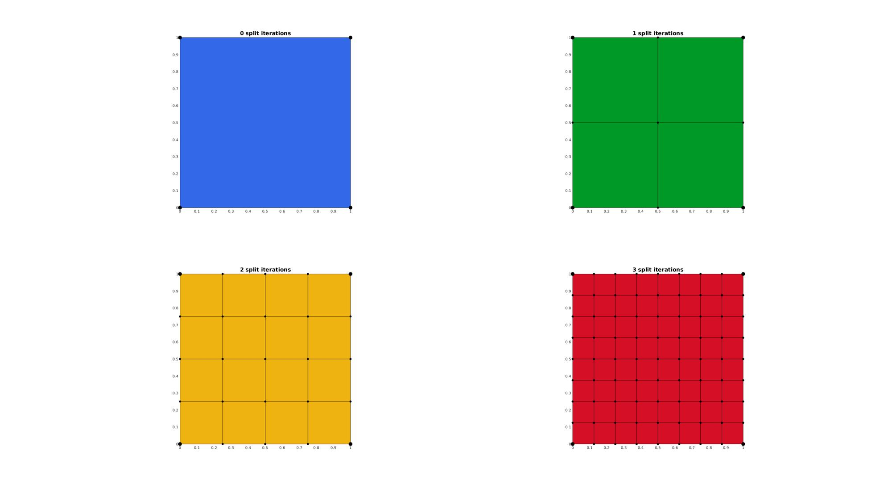
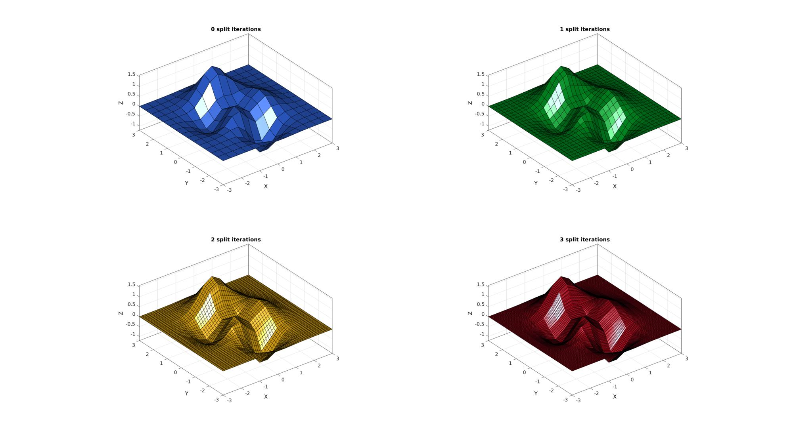
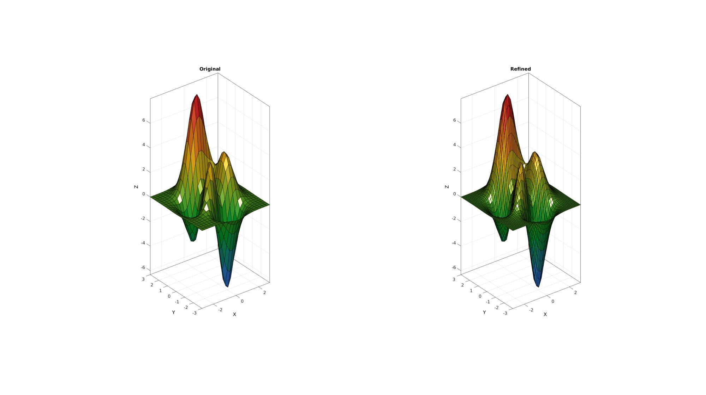

subQuad
Below is a demonstration of the features of the subQuad function
Contents
Syntax
[Fs,Vs]=subQuad(F,V,n);
Description
The subQuad function enables refinement of quadrangulated data
Examples
clear; close all; clc;
Plot Settings
fontSize=15; faceAlpha=1; edgeColor=0.2*ones(1,3); edgeWidth=1.5; markerSize=35; markerSize2=20;
Refining a quadrilateral
V=[0 0 0; 1 0 0; 1 1 0; 0 1 0]; F=[1 2 3 4]; n=0:1:3; %Number of added edge nodes pColors=gjet(numel(n)); cFigure; for q=1:1:numel(n) [Fs,Vs]=subQuad(F,V,n(q)); subplot(2,2,q); hold on; title([num2str(n(q)),' split iterations'],'FontSize',fontSize); gpatch(Fs,Vs,pColors(q,:),'k'); % patchNormPlot(Fs,Vs); plotV(Vs,'k.','markerSize',markerSize2); plotV(V,'k.','markerSize',markerSize); axis equal; axis tight; view(2); end drawnow;
Refining a cube
[V,F]=platonic_solid(2,1); n=0:1:3; %Number of added edge nodes pColors=gjet(numel(n)); cFigure; for q=1:1:numel(n) [Fs,Vs]=subQuad(F,V,n(q)); subplot(2,2,q); hold on; title([num2str(n(q)),' split iterations'],'FontSize',fontSize); gpatch(Fs,Vs,pColors(q,:),'k'); % patchNormPlot(Fs,Vs); plotV(Vs,'k.','markerSize',markerSize2); plotV(V,'k.','markerSize',markerSize); axisGeom(gca,fontSize); camlight headlight; end drawnow;

Refining quadrilateral surfaces in general
[X,Y,Z]=peaks(15); Z=Z/5; [F,V]=surf2patch(X,Y,Z); n=[0 1 2 3]; %Number of added edge nodes pColors=gjet(numel(n)); cFigure; for q=1:1:numel(n) [Fs,Vs]=subQuad(F,V,n(q)); subplot(2,2,q); hold on; title([num2str(n(q)),' split iterations'],'FontSize',fontSize); gpatch(Fs,Vs,pColors(q,:),'k'); % patchNormPlot(Fs,Vs); axisGeom(gca,fontSize); camlight headlight; end drawnow;
Example: Subdeviding in 1 direction by specifying splitMethod
V=[0 0 0; 1 0 0; 1 1 0; 0 1 0]; F=[1 2 3 4]; pColors=gjet(numel(n)); n=2; cFigure; subplot(2,2,1); hold on; title('Original','FontSize',fontSize); gpatch(F,V,pColors(1,:),'k',1,3); patchNormPlot(F,V); axisGeom(gca,fontSize); camlight headlight; for q=1:1:3 splitMethod=q; [Fs,Vs]=subQuad(F,V,n,splitMethod); subplot(2,2,q+1); hold on; title(['Refined set method: ',num2str(q)],'FontSize',fontSize); gpatch(Fs,Vs,pColors(q+1,:),'k',1,3); patchNormPlot(Fs,Vs); axisGeom(gca,fontSize); camlight headlight; % view(2); end drawnow;

Example: Maintaining face data (e.g. face color)
[X,Y,Z]=peaks(25); [F,V,CV]=surf2patch(X,Y,Z,Z); C=vertexToFaceMeasure(F,CV);
Requesting additional output to allow for "book keeping" of face data
[Fs,Vs,Css]=subQuad(F,V,1,1);
The additional output Css contains face indices, i.e. each refined face in Fs belongs to an initial face in F and this mapping is defined in Css. Hence the following operation "picks" out the appropriate color data for each face from the original array.
Cs=C(Css); %Get colors for refined faces from color data of original
cFigure; subplot(1,2,1); hold on; title('Original','FontSize',fontSize); gpatch(F,V,C,'k'); axisGeom(gca,fontSize); colormap gjet; camlight headlight; subplot(1,2,2); hold on; title('Refined','FontSize',fontSize); gpatch(Fs,Vs,Cs,'k'); axisGeom(gca,fontSize); colormap gjet; camlight headlight; drawnow;

GIBBON www.gibboncode.org
Kevin Mattheus Moerman, gibbon.toolbox@gmail.com
GIBBON footer text
License: https://github.com/gibbonCode/GIBBON/blob/master/LICENSE
GIBBON: The Geometry and Image-based Bioengineering add-On. A toolbox for image segmentation, image-based modeling, meshing, and finite element analysis.
Copyright (C) 2019 Kevin Mattheus Moerman
This program is free software: you can redistribute it and/or modify it under the terms of the GNU General Public License as published by the Free Software Foundation, either version 3 of the License, or (at your option) any later version.
This program is distributed in the hope that it will be useful, but WITHOUT ANY WARRANTY; without even the implied warranty of MERCHANTABILITY or FITNESS FOR A PARTICULAR PURPOSE. See the GNU General Public License for more details.
You should have received a copy of the GNU General Public License along with this program. If not, see http://www.gnu.org/licenses/.